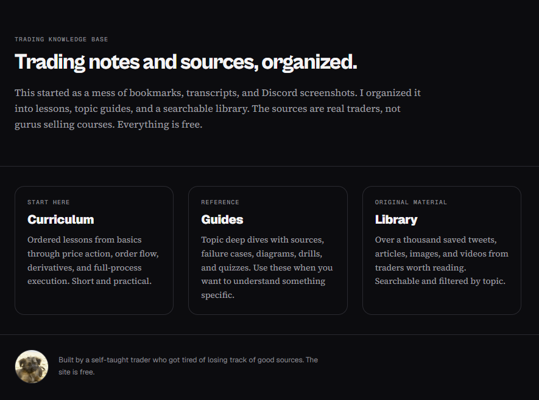
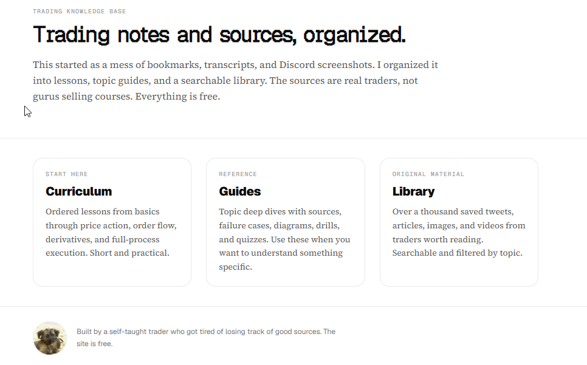
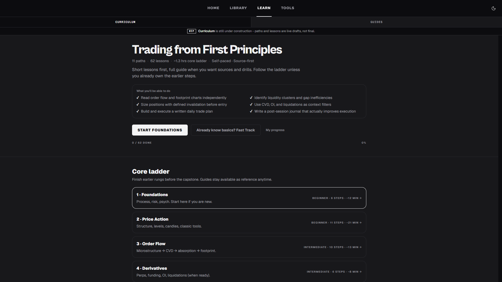
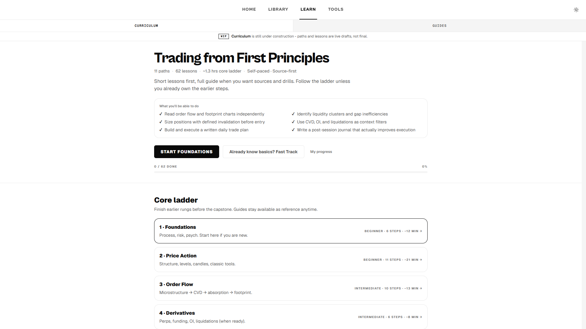

~80% WIP
Learning system
Trading Knowledge Base
Searchable library, curriculum, and guides for crypto trading knowledge in one workspace.
Problem
Trading knowledge was scattered across screenshots, bookmarks, tweets, and notes with no structure.
What I built
A searchable library with multi-category guides, curriculum paths, and a glossary in one workspace.
Outcome
~80% complete live site; 300+ resources reorganized into a usable research system. Try the glossary below.




More detail
My contribution
Independently planned and assembled using AI-assisted tools: product direction, requirements, testing, research, and iteration.